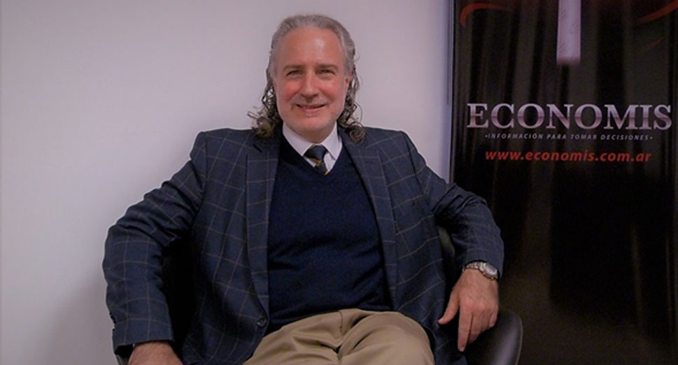
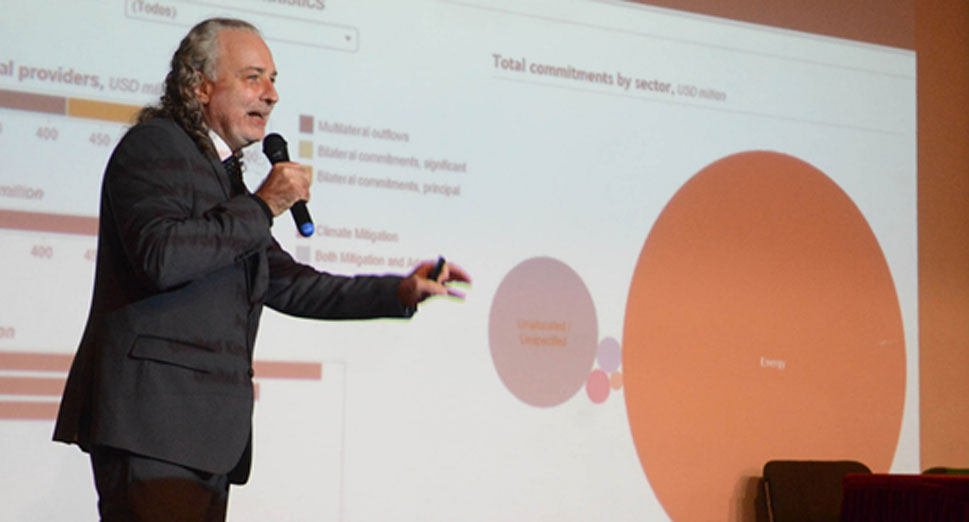

Rodolfo Tarraubella: “Ser sostenible es negocio”

¿Qué es CIFAL?
CIFAL es el Centro Internacional de Formación para Autoridades y Líderes que depende de la UNITAR (The United Nations Institute for Training and Research) perteneciente a Naciones Unidas. CIFAL tiene 30 centros en todo el mundo y es la Institución Mundial de capacitación y entrenamiento en sostenibilidad más prestigiosa del mundo. En Argentina trabajamos junto a Fundación Ecoconciencia que es el brazo técnico de CIFAL Argentina en sostenibilidad y cambio climático. Yo soy el presidente tanto de CIFAL Argentina como de Fundación EcoConciencia"
2. ¿Qué mejoras hubieron respecto a las metas de los ODS desde su nacimiento en Septiembre de 2015?
Se mejoró mucho en temas de energías (ODS N° 7), puntualmente en lo que refiere a energías renovables. Anteriormente era más económico producir con petróleo que producir con energía solar, hoy en día eso se revirtió y es más barato utilizar energía eólica y solar. Esa fue unas de las grandes diferencias que vio mejorada en el tiempo. Dentro del mismo ODS N°7, se mejoró la eficiencia tecnológica de máquinas que permiten hacer lo mismo que antes pero gastando menos energía.
¿Qué tan ambiciosa es la Agenda 2030 planteada por Naciones Unidas respecto a las metas por cumplir?
Lo más imposible ya fue posible. Lo más imposible era que se pongan de acuerdo 193 países y eso se logró. Yo creo que si uno va 30 años atrás, cuando se decía que se tenían que poner de acuerdo a desterrar el hambre del mundo y no se lograba. La agenda 2030 fue un punto de inflexión de la humanidad que todos se pusieron de acuerdo en desterrar el hambre y la pobreza del mundo, combatiendo la desigualdad y la injusticia y además protegiendo el planeta.

4. ¿Crees que la sociedad en su conjunto conoce los datos del daño que se está generando por los comportamientos que se vienen sucediendo? ¿Que tan importante es la difusión y la capacitación en temas de ODS?
Creo que la gente no llega a tomar conciencia. Respecto a capacitación, creo que si se realiza de forma más tradicional, esta no transforma. Nosotros utilizamos mucho las neurociencias aplicadas a la capacitación, que muchas veces molesta al alumno porque tiene salir de sus comodidades de estar solo leyendo o anotando para convertirse en un ser vivencial y multi-sensorial en la capacitación.
¿Cuál es tu experiencia respecto a la aplicación de los ODS en Puertos?
La primera gran experiencia fue en el Puerto de Amberes, un puerto inmenso donde fuimos 15 Cifales de todo el mundo a resolver problemas que ellos nos planteaban respecto a no tener claridad en algunas cuestiones referidas a ODS. Ahí fui entendiendo un poco más respecto a la importancia de la relación “puerto-ciudad”. Luego, en Buenos Aires, comenzamos a trabajar con EXOLGAN, quienes, casi sin tener conocimientos en temas de sostenibilidad, terminaron generando algunos compromisos climáticos como por ejemplo ser “carbono neutro” antes del año 2030, y en forma absoluta y sin condicionamiento. Es importante destacar también la certificación en ODS lograda por el Puerto de Dock Sud y el compromiso que sus equipos tomaron al respecto de la sostenibilidad.
¿Crees que desde los puertos puede nacer una nueva forma de trabajar anclada en ODS?
Creo que la industria marítima fue una de las últimas que se metió en temas de ODS, pero se metió con tal energía y con tal fuerza que creo va a estar liderando a corto plazo la sostenibilidad. Hoy ya se está hablando de buques a hidrógeno y buques a gas. Se está hablando mucho respecto a energías renovables para todo lo que sea el proceso logístico. Creo que desde los puertos se debe obtener la posibilidad de generar incentivos a aquellos barcos que cumplan con requerimientos de sostenibilidad.
¿Cómo convencerías a los principales administradores, gerentes y líderes portuarios para que comiencen a focalizarse en los ODS?
Yo les diría que estamos en la tendencia del futuro. Estamos en que hoy, ser sostenible es negocio. No es negocio solo porque económicamente va a recibir más, es negocio porque lo será, además para las generaciones venideras, porque es restaurar parte del planeta y va a ser parte de una nueva historia. Es cierto que hubo y hay contaminación, pero hoy es tiempo de restauración, de cambiar y es esta generación la responsable de poder hacerlo.
Rodolfo Alejandro TARRAUBELLA >
Licenciado en Organización y Técnicas Bancarias con posgrado en Cambio Climático – Tratamiento de Conflictos Socioambientales.
Director ejecutivo de CIFAL Argentina, Director de la Secretaría de Sustentabilidad y Finanzas Climáticas. Fundador y presidente de Fundación EcoConciencia desde 1996. Creador de la Iniciativa para el Desarrollo de Bonos Verdes y Financiamiento Climático, y del Sistema de Transparencia Comunitaria (una herramienta para la gestión de conflictos socioambientales).
Creador del Centro de Innovación y Excelencia para la Integración de los ODS a la Estrategia Corporativa. Asesor de empresas y gobiernos, conferencista internacional, escritor
de numerosas notas en medios periodísticos, y libros.